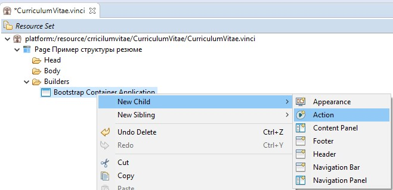
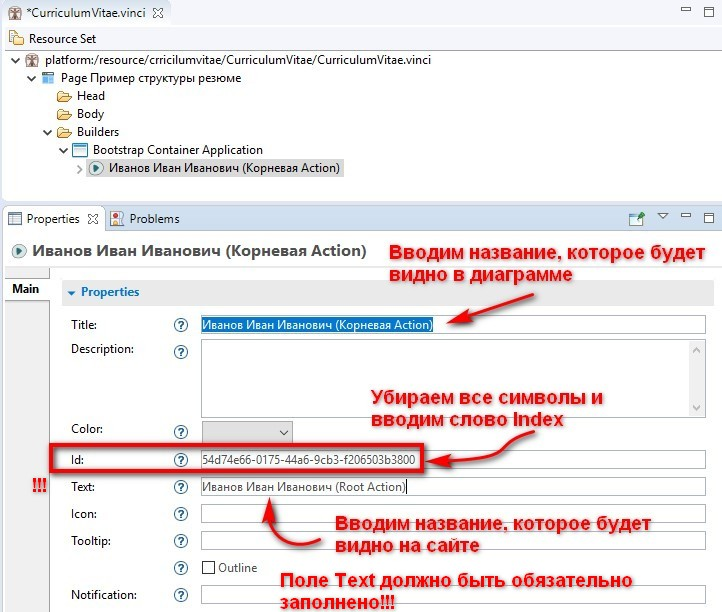
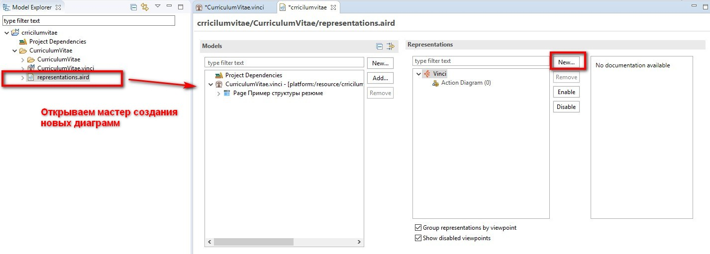
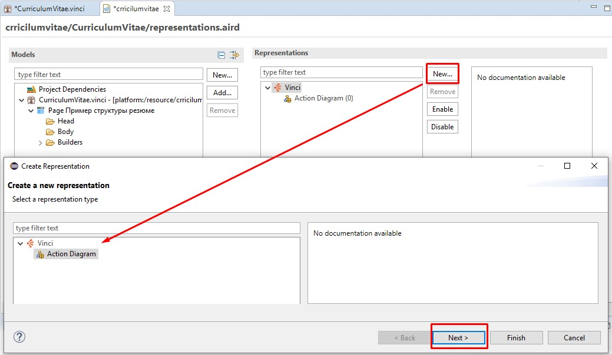
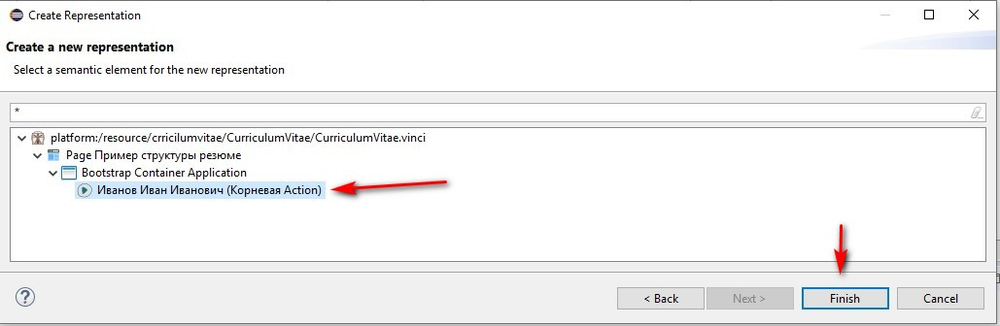
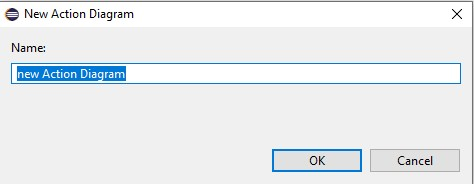
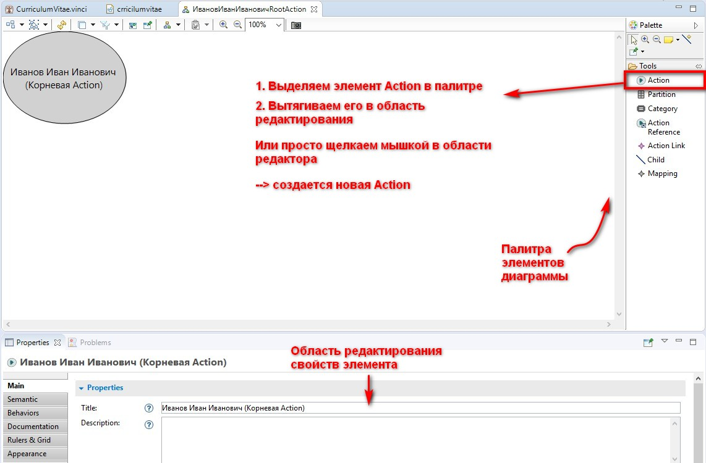
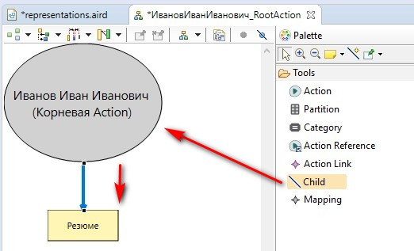
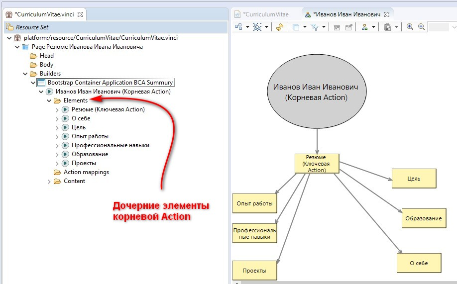

Чтобы начать строить нашу модель необходимо создать центральный элемент модели - корневую Action (Root Action). Корневая Action объединяес все остальные элементы нашей модели и на странице выглядит как самый верхний заголовок.
Выделяем элемент Bootstrap Container Application -> щелкаем правой кнопкой мыши (ПКМ) -> New child -> Action 
Мы видим, что наша Action появляется в дереве элементов под скучным названием Action. Давайте представим, что мы хотим сделать сайт, на котором будет размещено резюме Иванова Ивана Ивановича. Так и назовем нашу корневую Action.
!!! Обратите внимание, что в поле Title вводится название, которое будет отражаться в дереве элементов и в диаграмме. А в поле Text вводится название, которое будет отражаться на сайте. Если поле Text не заполнено, то страница не сгенерируется.
Так как созданная нами Action является точкой входа на сайт, то необходимо в поле ID заменить набор непонятных символов на слово index.
Более подробно про настройки Action можно прочитать тут.

Переходим к созданию диаграммы
Логическую структуру нашего сайта удобнее всего описывать с помощью диаграммы последовательностей.
Создадим такую диаграмму.
В области Model Explorer находим элемент representations.aird. Открываем его двойным щелчком. Видим мастер создания новых диаграмм (репрезентаций).


На данный момент у нас есть единственный элемент для которого можно создать диаграмму - это корневая Action Иванов Иван Иванович. Выбираем. Нажимаем кнопку Finish.
 
Придумываем имя. После нажатия на кнопочку ОК в области редактирования откроется наша диаграмма.

Наш учебный пример - это сайт жизнеописания Иванова Ивана Ивановича.
Жизнеописание (Curriculum Vitae) - это расширенный вариант резюме, предоставляемый работодателю при поиске работы. Следовательно, наш сайт будет содержать те разделы, которые обычно содержит резюме. Каждый раздел - это отдельаная Actions, которую мы можем нарисовать на диаграмме.
Всё, что мы хотим сообщить о Иванове Иване Ивановиче объединяется понятием “Резюме” - это будет наша стволовая Action.

Как правило, резюме содержит следующие разделы:
Создадим все эти Actions и построим диаграмму, в которой у корневой Action есть только один ребенок: стволовая Action “Резюме”, а все остальные разделы являются детьми (веточками) стволовой Action.
При выделении Мы можем выделять элементы диаграммы и редактировать их свойства.
На данном этапе нам необходимо для каждой Actions заполнить поля Text и Title. Пока что больше ничего настраивать не будем.
Переходим в дерево элементов нашего проекта. Мы видим, что в папке Elements, которая принадлежит корневой Action, появились дочерние элементы.
